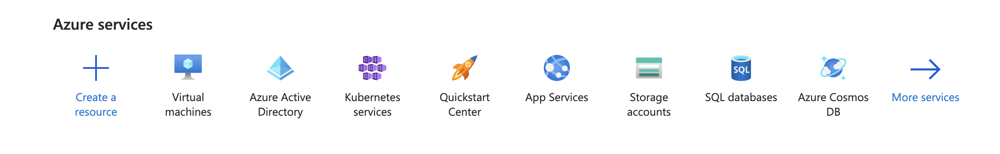
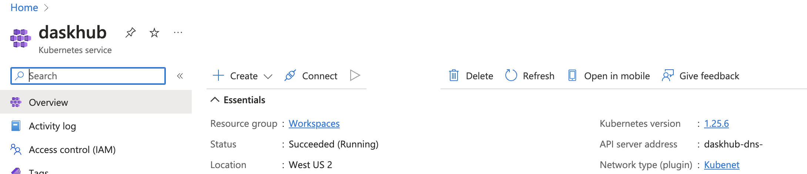
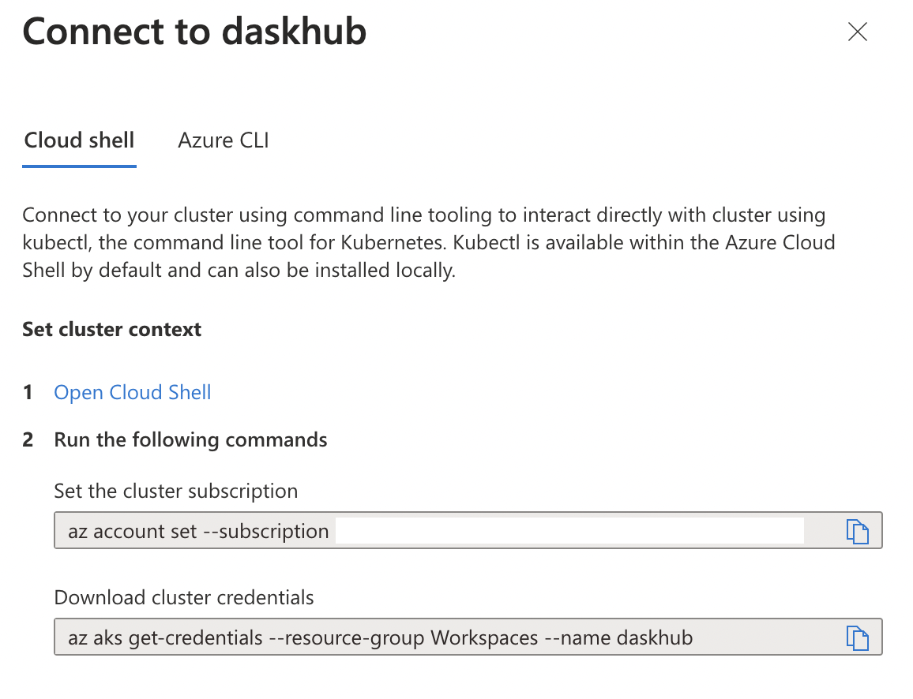

This is my notes for setting this up on Azure. Attempting to replicate the Openscapes 2i2c JupyterHub: https://github.com/2i2c-org/infrastructure/tree/master/config/clusters/openscapes
That hub is on AWS and is designed for large workshops (100+) however the NMFS OpenSci JHub is quite similar. Main difference at the moment is that I dont have a shared drive set-up and the user persistent volume (storage) is on the same VM as the user node for their Jupyter Notebook. This means that I cannot have multiple VM sizes. Need to fix so that user can pick a larger VM for a task if needed.
Create your Kubernetes cluster
Log into https:\\portal.azure.com
- Get to the dashboard that looks similar to this.

- Click on the Kubernetes Services button and you should see something like this

- Click Create Kubernetes Cluster
At this point, you will get to the set-up with lots of tabs.
- You need to select the resource group if you are in a subscription for an organization. Dont know what resource group to use, ask the admins.
- You need to give your Kubernetes cluster a name. For example,
jhubordaskhubor whatever. - You need to chose the AWS region. If you are using AWS S3 file access (big data in the cloud), then you need to be on the same region as the files you are accessing. Do you have no idea? Then you are probably not using AWS S3 file access. In that case, just go with the default or something close to you.
- Next you chose the Node size. This is the size of the base virtural machine (VM). It is going to spin up as many as it needs. The default is Standard DS2 v2 which as 2 CPU, 7 Gig RAM and 1T memory. This is fine for set-up. You can add more (bigger VMs later). Accept autoscaling since this is a multi-user hub.
The first tab is all you need for now. Later you may want to allow the user, to choose a different base VM. You can do that by adding node-pools. Thatll be covered after the initial set-up. For now, just get your basic hub working. You can add more VM sizes later.
- Click Review and Create
Wait for validation tests to pass.
- Click Create.
Once it is done deploying, you will see this.

Install DaskHub on your cluster
These next steps are done in the shell after connecting to your cluster. First you need to get to the shell.
Connect to your cluster
Once you have created your Kubernetes cluster, you want to go to its dashboard (by clicking on the name you gave it). Youll see something like this (I named mine daskhub).

Click on the Connect icon in the nav bar at top.
You then see this

Click on the link that says Open Cloud Shell.

You will get to a terminal. Paste in the two commands in the previous image (the commands that show up for you that is).
Create dconfig.yaml
This will be the configuration file for your Dask-enabled JupyterHub. For now, it can be just comments. Note the name is unimportant but should end in .yaml. I am using dconfig.yaml instead of config.yaml since I already have a config.yaml file for something elseand I have not figured out how to install different hubs in different directories or even different clusters in different directories (I have much to learn).
nano dconfig.yamlThis will open the nano editor. Edit your file. You can do # just blank for now. Then Cntl-O to save and Cntl-X to exit.
Install daskhub via helm chart
Instructions: https://artifacthub.io/packages/helm/dask/daskhub .
Check that helm is installed
helm versionTell helm about the dask helm repository
helm repo add dask https://helm.dask.org
helm repo updateNow install
helm upgrade --wait --install --render-subchart-notes \
dhub dask/daskhub \
--namespace=dhub --create-namespace \
--values=dconfig.yamlYou will see this on successful installation (its long. much has been cut). 
Set-up your external IP address
kubectl config set-context $(kubectl config current-context) --namespace dhub
kubectl --namespace=dhub get service proxy-publicThese commands will show the the IP address. Save the public IP address. You will need it in step 2. Look for the IP address under EXTERNAL-IP.
Step 2 Set up https
You can log out of your cluster. The next steps are done elsewhere.
Create a domain name
You will need a domain name for https which you want for security (and JHub wont stop complaining if you dont). Find a domain name provider and set one up. It is not expensive. I used GoDaddy.
Create a DNS entry
Lets pretend you set up bluemountain123.live as the domain. Go to the DNS settings for your domain. Add a type A record. This will do 2 things. First this will create the subdomain that you will use to access your JupyterHub. So lets say you create, dhub as the type A DNS entry. Then dhub.bluemountain123.live will be the url. You can have as many subdomains as you need.

Test if the url is working
http:\\dhub.bluemountain123.live would be the url using the example domain above. Test that it is working (shows a JupyterHub login) before moving on. This is what you should see:

Set-up https on your JupyterHub
Log back into your Kubernetes cluster: go to portal.azure.com, click on your Kubernetes cluster name, and then click on Connect. Then click on Open Cloud Shell. Read documentation about https
Once you are on the shell, type
nano dconfig.yamlto edit the config file. Paste this in and save. Note the additional jupyterhub: in the yaml file. This is not in a plain JupyterHub with Kubernetes config file (i.e.in a non-daskhub, the jupyterhub: bit is not there and everything is moved to left by 2 spaces).
jupyterhub:
proxy:
https:
enabled: true
hosts:
- dhub.bluemountain123.live
letsencrypt:
contactEmail: your@email.comUpdate the JupyterHub installation
Anytime you change dconfig.yaml you need to run this code.
helm upgrade --cleanup-on-fail --render-subchart-notes dhub dask/daskhub --namespace dhub --version=2023.1.0 --values dconfig.yamlTest if https is working
Try https:\\dhub.bluemountain123.live and you should see the JupyterHub login without that http warning.
Step 3 Set up GitHub authentication
Optional, if you want to manage who can login via GitHub Team. I am going to show an example where I use a team on a GitHub organization to manage authentication. There are many other ways to manage users. Google to find that.
Create a new Oauth Application on GitHub
This is going to be associated with your (personal) GitHub account, but you can use a team on a GitHub org that you are owner of.
Log into GitHub and go to GitHub > Settings > Developer Settings > New Oauth Application
Look carefully at how I filled in the boxes.

Next you will see something like this

You need to copy the ID and then click the create secrets button and save the secret. Save those for later.
Create a team in your GitHub org
You will be added by default and add anyone else who needs access to the hub. Lets say your org is MyOrg and the team is called DaskHub. So then the allowed organization is MyOrg:DaskHub. You can leave off :DaskHub if you want to allow all members of the organization to log in.
Edit the dconfig.yaml file
nano dconfig.yamlAdd to your config file so it is now this. Replace the id, secret and url with your values. We need to set the KubeSpawner working directory because the Openscapes Docker image sets it to home/jovyan/.kernelswhich is fine but annoying since .kernels is hidden and not $HOME.
jupyterhub:
hub:
config:
GitHubOAuthenticator:
client_id: <replace with your OAuth id>
client_secret: <replace with your OAuth app secret>
oauth_callback_url: https://dhub.bluemountain123.live/hub/oauth_callback
allowed_organizations:
- MyOrg:DaskHub
scope:
- read:org
JupyterHub:
authenticator_class: github
KubeSpawner:
working_dir: /home/jovyan
proxy:
https:
enabled: true
hosts:
- dhub.bluemountain123.live
letsencrypt:
contactEmail: your@email.com Update the hub
helm upgrade --cleanup-on-fail --render-subchart-notes dhub dask/daskhub --namespace dhub --version=2023.1.0 --values dconfig.yamlTest
You should now see this and can authenticate with GitHub.

Set up the container image
Now you need to specify the Docker image that will be used. We will use 2 different profiles: Python and R (RStudio).
Edit the dconfig.yaml file and add the user image info. Note the spacing matters (a lot). I also added some Dask gateway config.
jupyterhub:
hub:
config:
GitHubOAuthenticator:
client_id: <replace with your OAuth id>
client_secret: <replace with your OAuth app secret>
oauth_callback_url: https://dhub.bluemountain123.live/hub/oauth_callback
allowed_organizations:
- MyOrg:DaskHub
scope:
- read:org
JupyterHub:
authenticator_class: github
proxy:
https:
enabled: true
hosts:
- dhub.bluemountain123.live
letsencrypt:
contactEmail: your@email.com
singleuser:
image:
name: openscapes/python
tag: f577786
cmd: null
singleuser:
# Defines the default image
image:
name: openscapes/python
tag: f577786
profileList:
- display_name: "Python3"
description: "NASA Openscapes Python image"
default: true
- display_name: "R"
description: "NASA Openscapes RStudio image"
kubespawner_override:
image: openscapes/rocker:a7596b5
dask-gateway:
gateway:
extraConfig:
idle: |-
# timeout after 30 minutes of inactivity
c.KubeClusterConfig.idle_timeout = 1800 Update the hub
helm upgrade --cleanup-on-fail --render-subchart-notes dhub dask/daskhub --namespace dhub --version=2023.1.0 --values dconfig.yamlChanging the VM size
NOT WORKING YET I am stuck on creating the persistent volumes. Needed because you need the user storage somewhere if you have multiple node pools.

kubectl get nodes --show-labels | grep instance-typebeta.kubernetes.io/instance-type=Standard_D8s_v3
Create a separate disk for user data
I want the user data to be in a drive different from the VM being spun up for their notebook. Sounds easy here https://z2jh.jupyter.org/en/latest/jupyterhub/customizing/user-storage.html but I cannot string the steps together.
Steps, I think?
Create disk
Something like this?
But I cant figure out the steps.
PVC
NOT WORKING YET
- Is this pvc.yaml right?
- How would I point this to the disk that I mount in the step above??
This command might have useful info
KUBE_EDITOR="nano" kubectl edit pvc --namespace=dhub claim-eeholmesnana pvc.yamlkind: PersistentVolumeClaim
apiVersion: v1
metadata:
name: hub-db-dir
labels:
component: jupyter
spec:
storageClassName: "standard" # name of storage class, it will be default storage class if unspecified.
accessModes:
- ReadWriteOnce
resources:
requests:
storage: "40Gi"kubectl create -f pvc.yamlTo delete, you need to first edit the pvc yaml file and get rid of pvc protection. It is 2 lines.
kubectl --namespace=dhub get pvc
KUBE_EDITOR="nano" kubectl edit pvc --namespace=dhub claim-eeholmesThen you can delete
kubectl --namespace=dhub delete pvc claim-eeholmesCheck that it is gone
kubectl --namespace=dhub get pvcif not try
kubectl --namespace=dhub delete pvc claim-eeholmes --grace-period=0 --forcePV
Need a persistent volume claim too.
Tell the hub about the disk
https://z2jh.jupyter.org/en/latest/jupyterhub/customizing/user-storage.html
But see how this is done on the Openscapes 2i2c hub https://github.com/2i2c-org/infrastructure/blob/master/config/clusters/openscapes/common.values.yaml
I know their set-up is a little different: basehub -> jupyterhub in the helm chart, but I dont see how the singleuser bit in the yaml file is referencing the nfs in the top of that yaml.
Troubleshooting
- I cannot clone repos in the JupyterHub. Restart the server. In Jupyter, File > Hub Control Panel > Stop My Server.
Refs I used
Overall
- https://2i2c.org/service/#getahub
- Openscapes common.values.yaml https://github.com/2i2c-org/infrastructure/blob/master/config/clusters/openscapes/common.values.yaml
- https://artifacthub.io/packages/helm/dask/daskhub
- https://github.com/zonca/jupyterhub-deploy-kubernetes-jetstream/blob/master/dask_gateway/dask-hub/config_daskhub.yaml
- https://saturncloud.io/blog/how-to-setup-jupyterhub-on-azure/
- https://saturncloud.io/blog/jupyterhub-and-azure-ad/
Storage
- https://www.youtube.com/watch?v=Da1qn7-RHvY
- Dynamic NFS provisioning 2 https://www.youtube.com/watch?v=DF3v2P8ENEg&t=0s
- Dynamic NFS provisioning 1 https://www.youtube.com/watch?v=AavnQzWDTEk&t=0s
- https://alan-turing-institute.github.io/hub23-deploy/
- https://z2jh.jupyter.org/en/latest/jupyterhub/customizing/user-storage.html
- https://learn.microsoft.com/en-us/azure/aks/azure-nfs-volume
- https://learn.microsoft.com/en-us/azure/storage/files/storage-files-quick-create-use-linux
- https://bluexp.netapp.com/blog/azure-cvo-blg-azure-kubernetes-service-configuring-persistent-volumes-in-aks
Setting up a shared data disk
- https://www.mathworks.com/help/matlab/import_export/work-with-remote-data.html
- https://realpython.com/storing-images-in-python/
S3 access
- https://s3fs.readthedocs.io/en/latest/
- https://stackoverflow.com/questions/67259323/jupyterhub-access-aws-s3
- https://data.lpdaac.earthdatacloud.nasa.gov/s3credentialsREADME